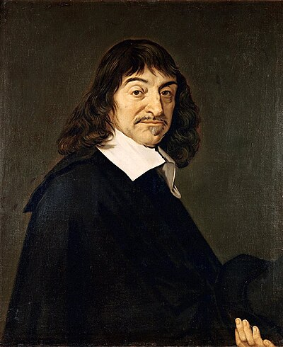

1596–1650
French
Geometry, philosophy, optics
Descartes is one of those rare figures who reshaped both philosophy and mathematics. Born in La Haye en Touraine (now renamed Descartes in his honour), he was educated by Jesuits and served briefly as a soldier before devoting himself to scholarship. He spent most of his productive years in the Dutch Republic, seeking intellectual freedom.
His mathematical masterpiece is La Géométrie (1637), published as an appendix to his philosophical Discourse on the Method. In it, Descartes introduced the coordinate system that bears his name: the idea of representing a point in the plane by a pair of numbers $(x, y)$, and a curve by an equation relating them. This was the unification of algebra and geometry. Before Descartes, geometry and algebra were separate disciplines; after him, they were one.
The consequences were revolutionary. Descartes' coordinate plane is what makes calculus possible. You cannot define "the slope of a curve at a point" without first turning the curve into an equation. Newton needed Descartes' framework — the ability to write $y = f(x)$ — before he could ask what $f'(x)$ means. There is a thirty-year gap between La Géométrie (1637) and Newton's calculus (1660s), and it is not coincidence.
Descartes also introduced the convention of using letters near the end of the alphabet ($x, y, z$) for unknowns and letters near the beginning ($a, b, c$) for known quantities — a notation we still use. He died in Stockholm in 1650, having been invited by Queen Christina of Sweden to give her philosophy lessons at five in the morning. The Swedish winter, combined with the early hours, proved fatal.
| Phase | Page | Referenced for |
|---|---|---|
| Phase 0 | The Pythagorean Theorem | Coordinate system depends on the Pythagorean theorem |
| Phase 0 | Coordinate Geometry | Published La Géométrie (1637), invented the Cartesian plane |
| Phase 0 | Coordinate Geometry | Turned points into numbers and curves into equations |
| Phase 0 | Coordinate Geometry | Made calculus possible — Newton needed coordinates first |
| Phase 0 | Coordinate Geometry | Folium of Descartes: $x^3 + y^3 = 3xy$ |